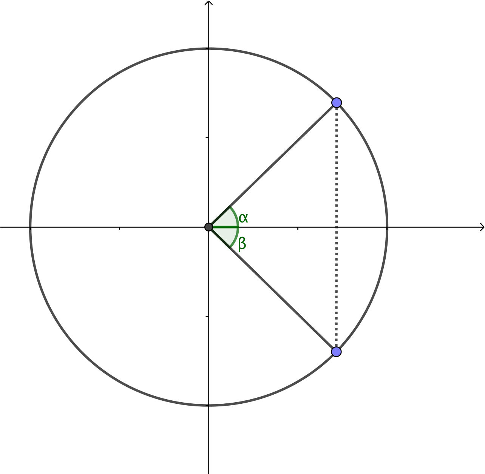

5. Ekvationer med cosiuns
Ekvationen \( \cos \alpha = a \)
För ekvationen \( \cos \alpha =a \) utgår vi på samma sätt som för ekvationen \( \sin \alpha = a \). Vi börjar med en enhetscirkel och kommer ihåg att cosinus ger periferipunktens x-koordinat.
Vi får att

På bilden gäller att \( \beta = -\alpha \). Vi får att ekvationen \( \cos \alpha =a \) har två lösningar, vinklarna \( \alpha \) och \( -\alpha \). När vi går hela varv kommer vi tillbaka till samma periferipunkter.
Lösningarna för ekvationen \( \cos \alpha =a \) där \( \alpha_0 \) är en lösning kan vi skriva som
\( \alpha = \pm\alpha_0 + n\cdot 360^{\circ} \) där n är ett heltal, eller som
\( \alpha = \pm\alpha_0 + n\cdot 2\pi \) där n är ett heltal.
Lösning
Vi får
\( \begin{array}{rcl} 2 \cos \alpha +1 & = & 0 \\ 2 \cos \alpha & = & =-1 \\ \cos \alpha & = & = -\dfrac{1}{2} \\ \end{array} \)
En vinkel som uppfyller villkoret är \( \alpha = 120^{\circ} = \dfrac{2\pi}{3} \).
(Vissa exakta värden för vinklar för sinus och cosinus hittar du i MAOL:s tabeller.)
Vi får alltså \( \alpha = \pm \dfrac{2\pi}{3} +n\cdot 2\pi \), där \( n \in \mathbb{Z} \).
Lösning
Vi får \( \alpha =\pm 3\alpha +n\cdot 2\pi \) som vi måste dela upp i två olika fall.
Fall 1
\( \begin{array}{rcll} \alpha & = & 3\alpha +n\cdot 2\pi \\ -2 \alpha & = & n\cdot 2\pi & | /(-2)\\ \alpha & = & -n\cdot \pi & \end{array} \)
som är samma som \( \alpha = n\cdot \pi \) eftersomn är ett heltal.
Fall 2
\( \begin{array}{rcll} \alpha & = & -3\alpha +n\cdot 2\pi \\ 4 \alpha & = & n\cdot 2\pi & | /4\\ \alpha & = & n\cdot \dfrac{\pi}{2} & \end{array} \)
Lösningarna kan vi skriva som \( \alpha = n\cdot \dfrac{\pi}{2} \), där n är ett heltal.
För ekvationer med cosinus gäller följande
\( \cos \alpha = a \)
\( \alpha = \pm\alpha_0 + n\cdot 360^{\circ} \) där n är ett heltal
eller som
\( \alpha = \pm\alpha_0 + n\cdot 2\pi \) där n är ett heltal.
Uppgifter
- Bestäm de exakta värdena av cosinus för följande vinklar
-1 \( -\dfrac{\sqrt{3}}{2} \) \( -\dfrac{1}{\sqrt{2}} \) \( -\dfrac{1}{2} \) 0 \( \dfrac{1}{2} \) \( \dfrac{1}{\sqrt{2}} \) \( \dfrac{\sqrt{3}}{2} \) 1 \( \cos 0 \) \( \cos \dfrac{\pi}{6} \) \( \cos \dfrac{\pi}{4} \) \( \cos \dfrac{\pi}{3} \) \( \cos \dfrac{\pi}{2} \) \( \cos \dfrac{2\pi}{3} \) \( \cos \dfrac{3\pi}{4} \) \( \cos \dfrac{5\pi}{6} \) \( \cos \pi \) -1 \( -\dfrac{\sqrt{3}}{2} \) \( -\dfrac{1}{\sqrt{2}} \) \( -\dfrac{1}{2} \) 0 \( \dfrac{1}{2} \) \( \dfrac{1}{\sqrt{2}} \) \( \dfrac{\sqrt{3}}{2} \) 1 \( \cos 0 \) \( \cos \dfrac{\pi}{6} \) \( \cos \dfrac{\pi}{4} \) \( \cos \dfrac{\pi}{3} \) \( \cos \dfrac{\pi}{2} \) \( \cos \dfrac{2\pi}{3} \) \( \cos \dfrac{3\pi}{4} \) \( \cos \dfrac{5\pi}{6} \) \( \cos \pi \) - Bestäm \( \cos 2 \alpha = 0 \).
Enhetscirkeln ger oss att \( \dfrac{\pi}{2} = 0 \). För cosinus gäller att lösningen är en vinkel och dess motsatta vinkel.
Alltså
\( \begin{array}{rcll} 2 \alpha & = & \pm\dfrac{\pi}{2} +n\cdot 2 \pi & | /2\\ \\ \alpha & = & \pm\dfrac{\pi}{4} +n\cdot \pi \end{array} \)
där n är ett heltal. - Bestäm \( \cos 4x = \dfrac{1}{2} \).
För cosinus gäller att \( \dfrac{\pi}{3} = \dfrac{1}{2} \). Dessutom har vi vinkeln och den motsatta.
Alltså
\( \begin{array}{rcll} 4 x & = & \pm \dfrac{\pi}{3} +n\cdot 2\pi & | /4 \\ \\ x & = & \pm \dfrac{\pi}{12} +n\cdot \dfrac{\pi}{2} \end{array} \)
där n är ett heltal.
- Lös ekvationen \( 2\cos \alpha -1 =0 \).
Vi får att
\( \begin{array}{rcl} 2 \cos \alpha -1 & = & 0\\ 2\cos \alpha & = & 1 \\ \cos \alpha & = & \dfrac{1}{2} \\ \end{array} \)
som har lösningen \( \alpha=\dfrac{\pi}{3} + n\cdot 2\pi \) där \( n\in \mathbb{Z} \). För cosinus har vi vinkeln och dess motsatta vinkel.
Alltså \( \alpha = \pm \dfrac{\pi}{3} + n\cdot 2\pi, n \in \mathbb{Z} \).
- Bestäm de x som löser ekvationen \( \cos (3x +\dfrac{\pi}{2})=\dfrac{\sqrt{3}}{2} \).
Enhetscirkleln eller tabellboken ger oss att \( \cos \dfrac{\pi}{6} = \dfrac{\sqrt{3}}{2} \).
Vi får
\( \begin{array}{rcll} 3x +\dfrac{\pi}{2} = \dfrac{\pi}{6} +n\cdot 2\pi \\ 3x = \dfrac{\pi}{6}-\dfrac{\pi}{2} +n\cdot 2\pi \\ 3x = -\dfrac{\pi}{3} +n\cdot 2\pi & | /3\\ x = -\dfrac{\pi}{9} +n\cdot \dfrac{2\pi}{3} \\ \end{array} \)
och
\( \begin{array}{rcll} 3x +\dfrac{\pi}{2} = -\dfrac{\pi}{6} +n\cdot 2\pi \\ 3x = -\dfrac{\pi}{6}-\dfrac{\pi}{2} +n\cdot 2\pi \\ 3x = -\dfrac{2\pi}{3} +n\cdot 2\pi & | /3\\ x = -\dfrac{2\pi}{9} +n\cdot \dfrac{2\pi}{3} \\ \end{array} \)
Alltså \( x = -\dfrac{\pi}{9} +n\cdot \dfrac{2\pi}{3} \) och \( x = -\dfrac{2\pi}{9} +n\cdot \dfrac{2\pi}{3} \) där \( n\in \mathbf{Z} \).
- Bestäm \( \cos \dfrac{x}{3} =\cos \dfrac{x}{2} \).
Vi får
\( \begin{array}{rcll} \dfrac{x}{3} & = & \dfrac{x}{2} +n \cdot 2\pi \\ \dfrac{x}{3} -\dfrac{x}{2} & = & n \cdot 2\pi \\ -\dfrac{x}{6} & = & n \cdot 2\pi & |\cdot (-6) \\ x & = & -n\cdot 12 \pi \\ & = & n\cdot 12\pi\\ \end{array} \)
och
\( \begin{array}{rcll} \dfrac{x}{3} & = & -\dfrac{x}{2} +n \cdot 2\pi \\ \dfrac{x}{3} +\dfrac{x}{2} & = & n \cdot 2\pi \\ \dfrac{5x}{6} & = & n \cdot 2\pi & |\cdot \dfrac{6}{5} \\ x & = & n\cdot \dfrac{12 \pi}{5} \\ \end{array} \)
Alltså\( x=n\cdot 12\pi \) och \( x =n\cdot \dfrac{12 \pi}{5} \).
- Bestäm \( \cos 2x =\cos \dfrac{x}{4} \).
Vi får
\( \begin{array}{rcll} 2x & = & \dfrac{x}{4} +n \cdot 2\pi \\ 2x -\dfrac{x}{4} & = & n \cdot 2\pi \\ \dfrac{7x}{4} & = & n \cdot 2\pi & |\cdot \dfrac{4}{7} \\ x & = & n\cdot \dfrac{8\pi}{7} \\ \end{array} \)
och
\( \begin{array}{rcll} 2x & = & -\dfrac{x}{4} +n \cdot 2\pi \\ 2x +\dfrac{x}{4} & = & n \cdot 2\pi \\ \dfrac{9x}{4} & = & n \cdot 2\pi & |\cdot \dfrac{4}{9} \\ x & = & n\cdot \dfrac{8\pi}{9} \\ \end{array} \)
Alltså \( x=n\cdot \dfrac{8\pi}{7} \) och \( x=n\cdot \dfrac{8\pi}{9} \).
- Lös \( \cos^2 x +\cos x =2 \).
Vi substituerar \( \cos x =t \). Då får vi ekvationen \( t^2 +t = 2 \Leftrightarrow t^2-t-2=0 \) som har lösningarna \( t_1 = 1 \) och \( t_2=-2 \).
Då vi substituerar tillbaka får vi \( \cos x = 1 \) och \( \cos x =-2 \).
För \( \cos x = 1 \) gäller att \( x= 0 +n\cdot 2\pi \). Ekvationen \( \cos x = -2 \) saknar lösningar eftersom värdemängden för cosinus är mellan -1 och 1.
Alltså \( x= 0 +n\cdot 2\pi \) där \( n \in \mathbf{Z} \).
- Bestäm \( \cos(\cos x )=1 \).
Cosinus får värdet 1 då vinkeln har värdet \( 0 +n\cdot 2\pi \).
Då gäller att den inre \( \cos x =0 \), alltså \( x=\dfrac{\pi}{2} \) och \( x=\dfrac{3\pi}{2} \).
Som vi kan skriva som \( x = \dfrac{\pi}{2} +n\cdot \pi \).